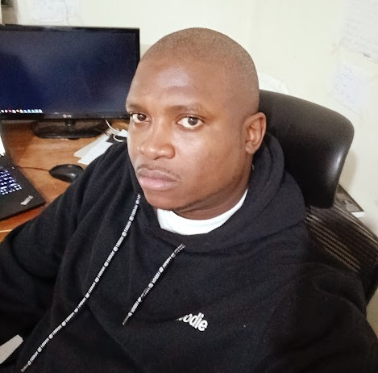

Hello and Welcome to my Portfolio of current projects
This is my first webpage after learning HTML written in HTML and CSS.
This is a webpage on a recipe of Chocolate Cookie Recipe and its written in HTML
This is a test HTML site, written in HTML only.
Im an experienced Network, Cloud and Systems Engineer Working with Safaricom 6 years now, previously worked with entities like Yu Mobile, DTB, Cooperative Bank and KMTC with progressive industry experience spanning 14yrs.
I decided to learn coding so that I can be well rounded in the industry and be able to interpret various codes as well as write functional code.
Hobbies and Interests include Swimming, Watching Movies and listening to Music.
Skills include Voice and Collaboration,Routing and Switching, Security on various vendor gear including Juniper,Sophos,Fortinet, Cisco, Huawei, Network Security Auditing, Certifications include MCSE,CCIE R+S,CEH,AWS, Sophos,
Check out My Portfolio. Awesome Projects
